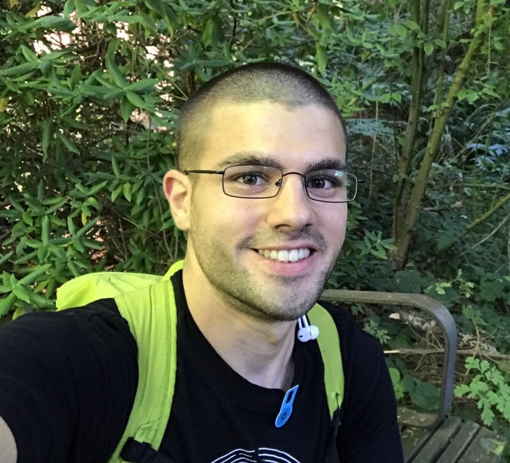

Life
Personal information

My name is Flaviu Vadan. I was born and raised in Romania and I moved to Saskatoon, SK, Canada, in 2013. I
started attending the University of Saskatchewan in 2014, as I worked for one year after I moved to SK.
In my spare time, I enjoy developing software, reading, and triathon training. I have only discovered the fun
and joy in developing software after I started university but my love of computers goes way back to the times I
messed around with registries on Windows and disassembled and reassembled my home computer because I was
interested in its hardware components. I have not been an avid reader for my whole life but I started picking up
books more and more often starting with 2013 and reading is now an important part of my life. I have loved
biking my whole life, discovered running is fun and thought "Might as well try swimming...". I was hooked ever
since and have taken up triathlon as part of my life as well.
Career
Experience
I held several positions throughout my life, so far, and they have all been experiences that I learned a lot
from. However, as an overview, the most rewarding life and career-influencing positions I have held are
research positions and the internship I am currently pursuing.
I first worked with a Computer Science professor on performing sentiment analysis on 19th century sermons using
different machine learning classifiers that were trained on positive and negative 20/21st century movie reviews.
That work was a collaboration with the Department of History at the University of Saskatchewan. I have also
performed a second study during this tenure, which was focused on performing human behavioral data analysis
from the perspective of dimensionality of the collected data.
The second research position was in Bioinformatics performing an analysis of different DNA motif-finding tools
as the first part of my project. Part of that analysis was using the motif finders to attempt to identity cis
and trans chromosomal interactions and generate visual representations of them. The second part of the project
was using a motif finder of choice and attempt to improve its results by pre-processing analyzed genes to fit
them in topologically-associated domains (the interacting chromosomes' regions).
Education
Some direction
 I started studying at the University of Saskatchewan in 2014. I initially wanted to pursue Computer
Engineering but, due to the differences between the educational systems of Romania and Canada, I was not able
to apply directly to enter the College of Engineering at the University of Saskatchewan. Due to this event, I
had to take an additional year, with a reduced course load, to establish some academic history in SK. Once that
year passed, I started studying Computer Science. Studying Computer Science is filled with fun and challenges
and the way it makes one think (in algorithms) can be a life-changing experience. In my third year I took a
science elective that changed my course again. I took Organic Chemistry and I was impressed by how specific
chemical interactions can be. I did not want to give up Computer Science and I did not want to pursue Chemistry
exclusively - I took up Bioinformatics.
I started studying at the University of Saskatchewan in 2014. I initially wanted to pursue Computer
Engineering but, due to the differences between the educational systems of Romania and Canada, I was not able
to apply directly to enter the College of Engineering at the University of Saskatchewan. Due to this event, I
had to take an additional year, with a reduced course load, to establish some academic history in SK. Once that
year passed, I started studying Computer Science. Studying Computer Science is filled with fun and challenges
and the way it makes one think (in algorithms) can be a life-changing experience. In my third year I took a
science elective that changed my course again. I took Organic Chemistry and I was impressed by how specific
chemical interactions can be. I did not want to give up Computer Science and I did not want to pursue Chemistry
exclusively - I took up Bioinformatics.